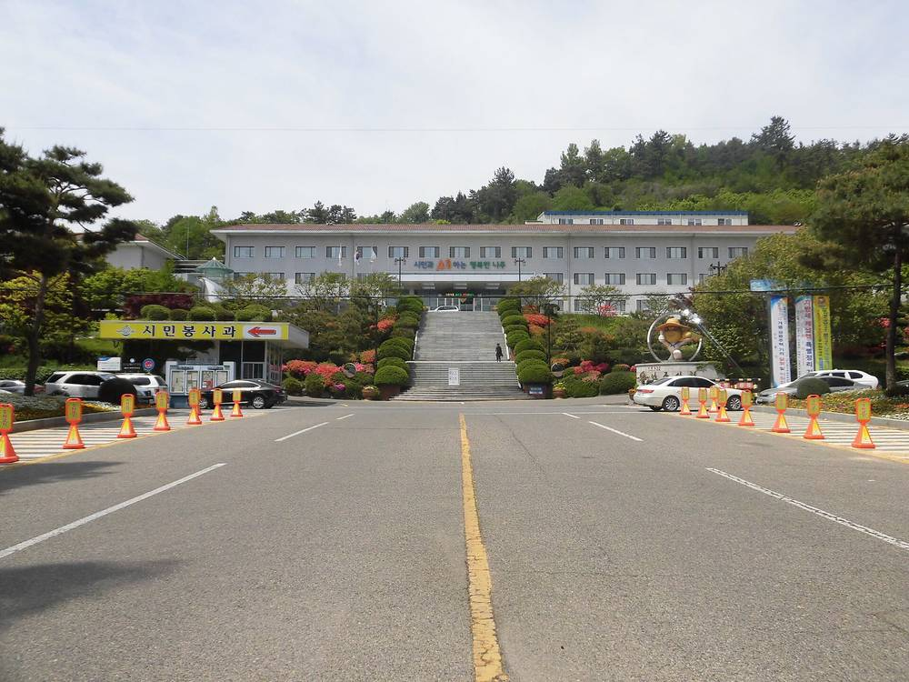

나주호 수상태양광 반대대책위 "보상 협상 아니다"…입장문서 전면 백지화 재확인

대책위 한쪽 입장…20년 373억 원 환원안은 합의 안 된 금액이라 주장, 사업자·시 답변은 아직 없어
나주호 수상태양광 반대대책위원회가 6일 입장문을 내고 목표는 사업 전면 백지화라고 밝혔다. 한국농어촌공사·현대엔지니어링 관계자와 면담하며 한 발언이 '보상 협상'으로 비친 데 대한 해명이다. 대책위는 사업자가 내놓은 20년간 약 373억 원의 지역 환원안이 주민과 합의한 금액이 아니고 산정 근거도 공개되지 않았다고 주장했다. 지난해 주민협의체 구성이 논의됐지만 대표성과 협상 방식을 두고 이견이 있어 출범하지 못했으며, 반대 측은 협의체 참여를 거부해 왔다고 했다. 대책위는 즉각 중단, 보상·회유를 통한 주민 갈등 조장 중단, 전면 백지화를 요구하며 "나주호의 가치는 보상금으로 환산할 수 없다"고 밝혔다. 이는 반대 측 입장이며, 공사·사업자와 나주시의 답변은 아직 나오지 않았다.
시민에너지 관점
20년간 373억 원은 한 해 평균 18억 원 남짓으로, 액수가 크게 보여도 산정 근거와 합의 없이 먼저 제시되면 주민에게는 보상 흥정으로 읽힌다. 덴마크는 2009년부터 2020년까지 새 풍력발전기 지분의 20% 이상을 반경 4.5km 안 주민에게 먼저 팔도록 해, 이익을 '건네는 돈'이 아니라 주민의 지분으로 만들었다. 수상태양광도 사업을 추진한다면 환원금보다 먼저 주민이 어떤 몫과 결정권을 갖는지가 답해야 할 물음이다. 사업자와 나주시는 환원액의 산정 근거와 사업 현황을 공개하고 입장을 밝히기 바란다.
출처: 세계중심나주뉴스 2026-11-06 김민경 원문 보기
羅州湖水上太陽光の反対対策委「補償交渉ではない」…声明で全面白紙化を再確認
対策委の一方の主張…20年373億ウォンの還元案は合意していない金額と主張、事業者・市の回答はまだなし
韓国・全羅南道の羅州湖（ナジュホ）水上太陽光に反対する対策委員会は6日、声明を出し、目標は事業の全面白紙化だと明らかにした。韓国農漁村公社・現代エンジニアリングの関係者との面談での発言が「補償交渉」と受け止められたことへの釈明である。対策委は、事業者が示した20年間で約373億ウォンの地域還元案は住民と合意した金額ではなく、算定根拠も公開されていないと主張した。昨年、住民協議体の構成が議論されたが、代表性と交渉方式をめぐる意見の違いで発足せず、反対側は協議体への参加を拒んできたという。対策委は、即時中断、補償・懐柔による住民対立の助長の中止、全面白紙化を求め、「羅州湖の価値は補償金に換算できない」と述べた。これは反対側の主張であり、公社・事業者と羅州市の回答はまだ出ていない。
市民エネルギーの視点
20年間373億ウォンは年平均で18億ウォン余りにあたり、額が大きく見えても、算定根拠と合意のないまま先に示されれば、住民には補償の駆け引きと映る。デンマークは2009年から2020年まで、新しい風車の持ち分の20%以上を半径4.5km以内の住民に優先して売るよう定め、利益を「渡すお金」ではなく住民の持ち分にした。水上太陽光も事業を進めるなら、還元金より先に、住民がどんな持ち分と決定権を持つのかが答えるべき問いである。事業者と羅州市は、還元額の算定根拠と事業の現況を公開し、立場を示してほしい。
出典: 世界中心羅州ニュース（Mainnaju） 2026-11-06 キム・ミンギョン 原文を読む
罗州湖水上光伏反对对策委员会：这"不是补偿谈判"…声明重申全面撤销项目
仅为对策委一方立场…称20年373亿韩元回馈方案未经协商一致，开发商与市政府尚未回应
反对罗州湖水上光伏项目的对策委员会6日发表声明，称目标是全面撤销该项目。这是对其与韩国农渔村公社、现代工程建设相关人士面谈时的发言被外界看作"补偿谈判"所作的说明。对策委称，开发商提出的20年约373亿韩元地方回馈方案并非与居民协商一致的金额，测算依据也未公开。去年曾讨论组建居民协议体，但因代表性和协商方式存在分歧未能成立，反对方一直拒绝参加协议体。对策委提出立即中止、停止以补偿和劝说制造居民矛盾、全面撤销三项要求，并表示"罗州湖的价值无法用补偿金折算"。这是反对方的立场，公社、开发商和罗州市的回应尚未出现。
市民能源视角
20年373亿韩元平均每年约18亿韩元，金额看似不小，但在没有测算依据和协商一致的情况下先行抛出，在居民看来就是补偿讨价还价。丹麦在2009年至2020年间规定，新建风机须将至少20%的股份优先出售给半径4.5公里内的居民，让收益成为居民的股份，而不是"给予的钱"。水上光伏如果要推进，比回馈金更先要回答的是居民拥有什么份额和决定权。开发商和罗州市应公开回馈金额的测算依据和项目现状，并表明立场。
来源: 世界中心罗州新闻（Mainnaju） 2026-11-06 金敏京（音译） 查看原文
Opposition committee on Naju Lake floating solar says "this is not a compensation negotiation," reaffirms demand to scrap project
One side's statement: committee says 37.3 billion won, 20-year return plan was never agreed; developer and city have not yet responded
The committee opposing the floating solar project on Naju Lake issued a statement on the 6th saying its goal is to scrap the project entirely. It was explaining that remarks made in a meeting with officials of the Korea Rural Community Corporation and Hyundai Engineering had been seen as a "compensation negotiation." The committee claimed that the roughly 37.3 billion won, 20-year local return plan offered by the developer is not an amount agreed with residents and that the basis for the figure has not been disclosed. A residents' council was discussed last year but never launched because of disagreements over representation and negotiating method, and the opposition side has refused to join it, the committee said. It demanded an immediate halt, an end to stoking division among residents through compensation and persuasion, and full cancellation, adding that "the value of Naju Lake cannot be converted into compensation money." This is the opposition's position; responses from the corporation, the developer and Naju City have not yet been published.
Citizen Energy View
Over 20 years, 37.3 billion won averages a little over 1.8 billion won a year; however large that sounds, offering it before a basis and an agreement exist looks to residents like haggling over compensation. From 2009 to 2020, Denmark required that at least 20% of the shares in any new wind turbine be offered first to residents within 4.5 km, turning the benefit into residents' ownership rather than money handed over. If a floating solar project goes ahead, the question to answer before any return payment is what share and decision-making power residents hold. The developer and Naju City should disclose how the return figure was calculated and the project's status, and state their positions.
Source: Mainnaju (World-Center Naju News) 2026-11-06 Kim Min-kyung Read the original